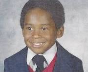

This website is all about Kobe Bryant, and how his life started & What he accomplished in his life.

This website is all about Kobe Bryant, and how his life started & What he accomplished in his life.
Kobe Bryant was born in Philadelphia in 1978. His father, Joe Bryant, was a professional basketball player, and the family relocated to Italy when Kobe was six years old. Kobe developed his game playing basketball for local teams and refining his skills before returning to the U.S. at age 13.
Kobe Bryant was a mythical NBA legend, winning five championships with the Los Angeles Lakers. He was a two-time NBA Finals MVP, with 18 All-Star selections and scoring 81 points in one game. Bryant won two Olympic gold medals and was renowned for his "Mamba Mentality" and his relentless work ethic. Kobe Bryant was killed on January 26, 2020, in a helicopter crash in Calabasas, California, along with his daughter Gianna and another seven individuals. The world mourned the death, leaving the legacy of sportsmanship, community service, and inspiration. Worldwide fans, players, and stars mourned the untimely death.

The legacy of Kobe Bryant extends beyond the court, where he influenced generations with his "Mamba Mentality" of relentless effort and perseverance. His work ethic reputation, leadership qualities, and competitive drive imprinted on the world of sports culture, teaching youth athletes and paving the way for youth empowerment. His charitable efforts and narratives established his enduring influence.